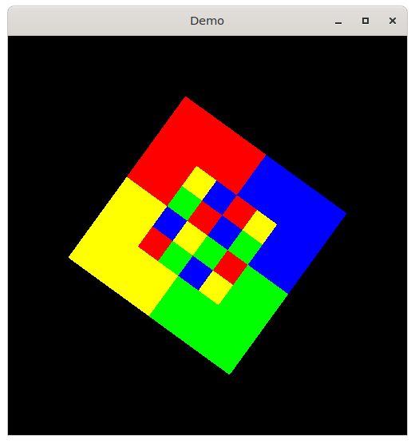

Most basic OpenGL texture mapping demo. UIApplication is used to initialize GLFW. Then a GLFWWindows is created and a render callback installed. Finally UIEvent handles event processing and sets a fixed framerate.

This is a mulle-sde project.
It comes with its own virtual environment and list of dependencies. To fetch and build everything say:
mulle-sde craft --[release|debug]
The resultant demos will be in kitchen/{Release/Debug}.